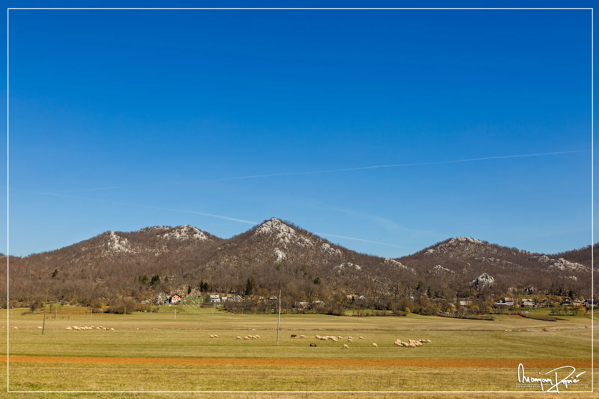

Mora li svaki izlet biti speleološki da bi bio dobar?
Ili, kako te puknuti amortizeri dovedu do masovnog policijskog legitimiranja na autoputu, nakon čega se rezignirana guma odluči ispuhati pri brzini od 120 km/h

Nedjelja dopodne. Sunčana, vrlo topla, prava kasnoproljetna iako je proljeće još mlado. Ako si već u Lici, onda je savršena prigoda za turu po prirodi. Naravno, ne pješke jer smo motorizirani i jer je tura po prirodi samo usputna zadovoljština u povratku prema zagužvanom i zagađenom Zagrebu. Prirodno odredište je ovoga puta jezero Kruščica, umjetno smješteno između ličkih sela Vaganac i Kosinj. Na skretanju za Vaganac, na tabli ispod imena jezera piše 2 km, pa računamo - nije daleko. Cesta sasvim ok, do iza Vaganca asfaltirana, a dalje bijela. Kaže karta da je dobra, a tako kaže i susjeda koja je tamo bila „nedavno“ sa malim autom i drugom susjedom. Može se i do brane, ali su tamo skrenuli lijevo gdje su trebali skrenuti desno pa otišli u neko selo pored Kosinja. Dakle, kako god bilo, što god činili, nemojte skretati lijevo i nema problema.
[caption id="attachment_2341" align="alignnone" width="2760"] Vaganac[/caption]Vaganac je malo, pitoreskno selo okruženo okolnim kamenitim brdima. Ovčice pasu po kotlini, plavo nebo, sve je kao na filmskoj kulisi. Putem gledamo zanimljive drvene kućice, oči pasu stijenski pejzaž koji obećava podzemnim šupljinama. I onda nestade asfalt, put se račva u dva dijela bijele ceste. Jedan nešto bolji, drugi nešto lošiji koji se penje uz brdo. Iako bi rado odabrali ovaj bolji, malena drvena tabla na križanju sa natpisom „jezero Kruščica“ govori da bolji put nije opcija ako želimo uživati u planiranom izletu. I tako krećemo uzbrdo. Auto, sa nas troje i natovaren za povratak u ZG, (jer se moj prijedlog, tj. amandman da idemo „light“ 2 kilometra, pa se onda vratimo po stvari – nije usvojio silom demokratske većine u vidu moje mame) sada se propinjao po kamenju koje raste iz puta kao proljetno cvijeće po livadi. Putem, povremeno stanem i istrčim iz auta pogledati kakvu vrtaču ili stijenu ispod koje očito vrišti da tu mora biti kakva jama. I bilo ih je. Mamu, držeći se čvrsto za rukohvat na vratima zbog ljuljanja auta, to i nije impresioniralo: „Ti nisi normalan sa tim jamama“. Put se nastavlja u nedogled, čini se kao da smo prošli i više od ta dva kilometra, a jezera nigdje. Povremeno ravno, a onda rupetina koju ne možeš zaobići, a auto struže. I konačno – voda. Eto ga! I sad se vozikamo kroz šumu gledajući jezero između drveća. Jezero je fakat prelijepo između dva stabla. Konačno, nailazimo na travnato ugibalište, stajemo odmoriti sebe i auto, a ispod ugibališta putić koji vodi prema jezeru. Primjećujemo i improviziranu ribičku bivak-vikendicu, koja osim neprokišnjavajućeg krova, ima i klupice, stol pa čak i roštilj. Malene stepeničice olakšavaju spuštanje do obale jezera i tu smo se odlučili skrasiti. Ima dovoljno prostora i da bez opasnosti zapinjanja među visoko drveće malo dignemo i drona. Sunce grije, nema ni oblačka, nema vjetra. Jezero mirno, bez valića, okolna brda se zrcale tako da gledajući kroz tražilo foto-aparata ne znaš što je gore, a što dolje. Upijamo mir, apsolutnu tišinu koju povremeno poremeti kakva ptičica ili kliktaj letećih gospodara neba – škanjaca.
Mala pauza da kažemo dvije-tri riječi o akumulacijskom jezeru Kruščica... Jezero je, iako umjetno stvoreno, stvarno lijepo. Stvoreno je 1966. godine, (dakle vršnjaci smo). Brana je visoka 77 metara, a negdje u njegovim dubinama potopljeno je i selo Kruščica, sa svim kućama i crkvom Sv. Ilije. Stanovništvo je iseljeno, a oltar crkve preseljen je u Aleksinicu gdje je i danas. Preseljeno je i groblje, a zajednička grobnica nalazi se uz put kojime smo došli. No, ima tu i druga priča interesantnija speleolozima; naime prilikom izgradnje brane, kako je riječ o kraškom području, da bi se spriječio gubitak vode iz akumulacionog jezera i njeno otjecanje podzemnim putevima, osim geoloških napravljena su i speleološka istraživanja. Ista su provodili speleolozi PD Željezničara i PDS Velebita, a pod vodstvom Srećka Božičevića. Podzemne bušotine su injektirane, ali su nakon zamijećenih velikih gubitaka injekcijske mase u podzemnim šupljinama postavljena i stalna smjenska dežurstva speleologa koji bi žurno javljali u injekcijsku postaju u slučaju novih prodora skupe mase u špilju. Više o tome možete pročitati u na kraju teksta priloženom članku Hrvoja Malinara objavljenom u Speleologu br. 66. (originalni file download link: https://hrcak.srce.hr/file315816)
Vratimo se sada putu. Nakon što smo se nas troje nauživali sunca i tišine red je bio za poć' dalje. Mama je rekla; „dosta si letio, idemo dalje, letit ćeš na drugom mjestu“. Demokratski sam opet nadglasan, dron je sletio u box i opcija povratka preko drmusavog puta zamijenjena je opcijom „idemo dalje ravno prema brani, to nam je bliže“. I krenusmo tako. Bijela cesta nekako se premetnula u šumski put povremeno prošaran rupama veličine raskošnog radnog stola, ali nema veze jer je vidik prekrasan. Čudan zvuk struganja auspuha na izlasku iz 24. rupe dao je do znanja da zadnji amortizeri malo pate. Ali, valjda smo blizu kraja pa će uskoro i asfalt. Putem se izmjenjuju lijepe šumske livade, stijene prošarane grižinama, a i cesta se lijepo penje uzbrdo i uzbrdo te smo se ubrzo, nakon jedne ogromne zidine od stijene što se nepovjerljivo naginje nad put i nas troje, zatekli na visini više od sto metara iznad jezera.
Onako, krajičkom oka i uma posmatram hoće li truckanje uznemiriti kakvu od mnogobrojnih pukotina u kamenu polovice koja je još uvijek ostala nad cestom, a druga polovica završila tko zna gdje u provaliji ili brani jezera. Malo dalje moramo stati jer vidik puca na daleko, preko jezera skroz tamo do širokog Velebita. Idealno za foto-session i „foto za na Fejs“. Ako oduzmemo lagodnost putovanja na četiri kotača, ovaj put je doslovno savršen i za planinarsko pješačenje. [caption id="attachment_2347" align="alignnone" width="2760"] A pogled puca tamo daleko prema Velebitskim vrhuncima[/caption] Nakon visinskog klimaksa, put lagano i lijeno kreće prema dolje. Iako branu još vidimo, taj put nikako da skrene prema brani. Rupe dijelom zamjenjuje blato, a zamjećujemo i nešto šumske mehanizacije. Povratak bi možda i imao smisla kada bi igdje našli mjesto za okrenuti se. Ali ga nema, pa stoga idemo odlučno stotinama metara naprijed, a u mislima se vrti – „što se nisam vratio dok je za povratak bilo samo 'dva' kilometra“. Nakon još zabrojanih stotina metara puta iste nadmorske visine, dolazimo na križanje. Opcije su lijevo ili desno. Sjetismo se uputa susjede koja je rekla „ne skreći lijevo, sigurno ćeš pogriješiti“, pa uz pjevušenje Thompsonove „nego ajde desno do velike stijene“, odosmo, pogađate, desno. Blatnjavi put spušta se prema dolje, logika nalaže da ide prema brani, znači vjerojatno ide dobro. Prve sumnje pojavile su se kad smo ugledali šumske traktore i manje rovokopače, a svaka sumnja potvrdila se dolaskom na kružni tok, ili ličkim rječnikom rečeno – okretaljku. I okrenusmo se natrag. Putem uzbrdo vozeći u prvoj brzini, sjetismo se i susjede. Na prije spomenutom križanju puteva, pokislo odabrasmo opet desnu stranu jer nam je sada ta desna zapravo bila lijeva kada smo dolazili sa druge strane, odnosno sada nam lijeve. Zbunili ste se? Neka.Vozimo se dok sunce grije na 19 stupnjeva. Na dijelovima puta gdje borovi rade sjenu vlada blato i temperatura od mršavih 5 iznad nule. Cestu očito koristi samo šumarija i poneki zalutali turisti sa Mazdom. Da skratim agoniju jer se ništa bitno nije promijenilo u krajoliku ili pod kotačima, konačno i napokon izađosmo na asfalt negdje pred Kosinjem. Napokon. Iako je bilo par gustih trenutaka u kojima smo se pitali hoćemo li izaći iz blata ili ostati do ponedjeljka i dočekati drage šumare i njihovu mehanizaciju, ipak smo se iskobeljali. A nije bila ni neka kritična situacija – u bunkeru kanister vode, domaći kruh, lički sir škripavac i još koječega, goriva ima za grijanje preko noći i svakako bi preživjeli. Svejedno, ništa nije moglo pokvariti osjećaj lijepog dana i prekrasne prirode. Preporučujemo svakako, ali – odite pješice. Ili sa nečim što ima pogon 4x4 i relativno je visoko od tla.
[caption id="attachment_2348" align="alignnone" width="2760"] Kosinj i njegov znameniti most[/caption]U Brinju kratki pit-stop da zamijenimo putnike – mama ostaje, ulazi sestra, pas i mačka. Suvozača i vozača ne mijenjamo, to smo još uvijek Beata i ja. Tražeći dodatne pogodnosti asfaltnih cesta, penjemo se na autoput i gas prema Zagrebu. Malo iza tunela Mala Kapela, policija zatvorila autoput i sve – ali baš sve preusmjerava na Tifonovu pumpu.
Utjeralo nas u jednu kolonu, a špalir policije čeka i zaustavlja svaki auto da bi bilo brže i učinkovitije. Onda ajmo; vozačka, prometna... Prpić, ha? Imate rodbine u Senju? Spustite prozor da vidim gospođu (sestru) iza... zašto gospođa nije vezana?... gospođo molim vas vašu osobnu... jeli gospođa kažnjavana prije? .... Nije? ... Dobro... Sada ćemo vas pustiti samo sa opomenom. Gospođa je bila zadovoljna izrečenom kaznom, iako sam već imao pripremljen monolog kukanja koji je uključivao i pozivanje na svete, neraskidive veze vojske i mile nam policije. Mačka i pas nisu trebali davati osobne.
I tako strogo opomenuti od simpatične policajke, brzo smo dalje na cesti. Kilometri se nižu, do Zagreba još samo 15-ak, kad pri normalnih 120 na sat i normalnoj gužvi za kraj vikenda, neki čudni zvuk sa prednje strane. Sve jači i jači. Iskusno uho prepoznalo je ispuhanu gumu. Brzo žmigavac, zaustavni trak, bjež' dalje od automobila, autobusa, kamiona...
Gumi je dosadilo maltretiranje po kamenju, blatnih šumskih putevima, brzoj autocesti i jednostavno je odlučila ispuhati se. Pa se ti sad misli. Kada sam rekao iskusno uho, sličan zvuk desio se prije više godina putem prema Rokinoj bezdani gdje su školarci trebali imati završni ispit. Tada je guma, na autoputu prije Ogulina također rekla – dosta. Jedino što je bila zadnja desna, a priuštila nam je istovar gomile transportnih vreća da bi došli do rezervne (one formata za tačke). Srećom bio je tada radni dan pa smo mogli kupiti novu, jer sa ovom pričuvnom ne bi mogli do Crnopca te iste večeri jer smo kao i ostali speleolozi na terenu tog vikenda putem pozvani kao pričuva za HGSS-ovu akciju speleospašavanja iz Kite tog trenutka. Sada srećom nije bilo poziva za sličnu akciju, ali ni transportnih vreća pa je dohvaćanje "rezervne gume za tačke i moderne automobile" bilo lakše. Montirana po svim pravilima u slučaju saobraćajnih nezgoda (žmigavci, trokut, narandžasti prsluk), uskoro se „nazoviguma“ ponosno ustobočila na prednjoj lijevoj strani, a auto s njom izgledao otprilike kao i kolica Broja 1 iz Alana Forda – ona na kojoj je jedan kotač široki gumeni, a drugi kolski drveni.
Srećom, do Zagreba nije puno kilometara pa smo po zaustavnoj traci nekako dogiljali do Demerja. Na prvoj slijedećoj pumpi dodali još malo zraka u „nazovigumu“, vjerojatno malaksalu od sreće što je nakon dugih godina mraka u prtljažniku konačno ugledala i svjetlo dana i ispunila svoju svrhu.
I na kraju, sumarum.
Gume sam drugi dan zamijenio besplatno pod akcijom zimsko-ljetno preko HAK-a, iako su me u jednom od njihovih ovlaštenih vulkanizera stavili na listu čekanja sa terminom „za mjesec dana“. Ali gospođo, trenutačno vozim na onom kotaču za tačke, ne mogu baš tako mjesec dana. Nisam siguran da li me razumjela, ali ponovila je glasom automatske sekretarice: „Nemože prije gospodine, gužva je, znate“. A zatim i, „probajte nazvati za par dana“, kao da će se do tada nešto promijeniti u terminu ili doći do masovnih odustanaka zamjene guma. Slijedeći broj koji sam okrenuo bio je Siget (nije im reklama, ali su uvijek brzi, dobri i pouzdani), a nakon što sam gospodični objasnio problem, rekla je „Aaaaa to je ona guma za tačke! „Nema problema, imate termine danas u podne, pola jedan, pola dva...“
Amortizeri su druga priča, a ako vas baš zanima, red su veličine od 280 kuna do 860 kuna po komadu. Ima ih za birati koliko god vas srce ište. Oni jeftiniji vjerojatno nisu atestirani na ličke kaldrme.
Ali put oko Kruščice po sunčanom danu... eeee... ma ko to more platit. I ponovit ćemo ga opet.
Hrvoje Malinar - geneza špilje Kruščice u Lici [gallery ids="2340,2341,2342,2343,2344,2345,2346,2347,2348" type="rectangular"]